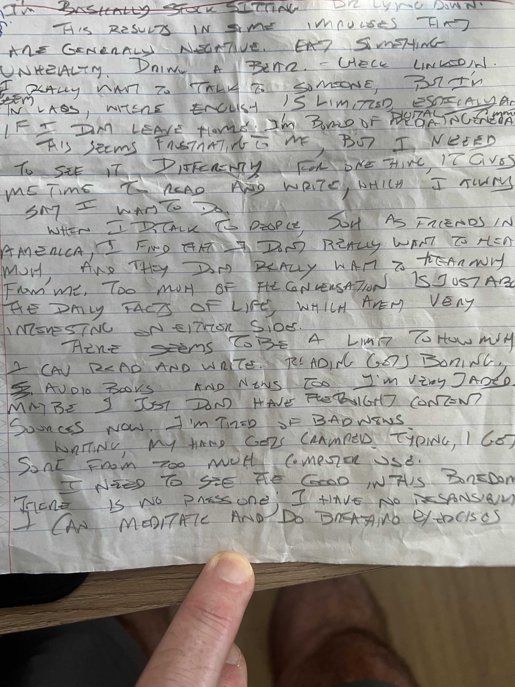

The Value of Boredom
This article presents perspectives on the value of boredom.
Lately, I have frequently felt somewhat bored. One reason is that I am currently partially disabled while healing some toes that I broke in a recent motorcycle accident. It hurts to walk or stand for long so I'm basically stuck sitting or lying down all day, especially as I should keep that foot elevated to reduce the swelling.
This results in some impulses that are generally negative. Eat something unhealthy. Drink a beer. Check LinkedIn. I really want to talk to someone, but I'm in Laos, where English is limited, especially if I don't leave home. I'm bored of media in general.
This seems frustrating to me, but I need to see it differently. For one thing, it gives me time to read and write, which I always say I want to do.
When I do talk to people, such as friends in America, I find that I don't really want to hear much, and they don't really want to hear much from me. Too much of the conversation is just about the daily facts of life, which aren't very interesting on either side. There seems to be a limit to how much I can read and write. Reading gets boring, audio books and news too. I'm very jaded. Maybe I just don't have the right content sources now. I'm tired of bad news.
Writing, my hand gets cramped. Typing, I get sore from too much computer use. I need to see the good in this boredom. There is no pressure, I have no responsibility. I can meditate and do breathing exercises. But I don't.
In the United States, many parents overstimulate and over-schedule children, as do any devices given to them. This can prevent children from getting bored, which may be a critical component of their development and individuation.
Even if I can't exercise, I can plan and prioritize and prepare for when I have my full capabilities again.
Why can't I meditate? Who can relate?
I have overestimated myself. Work was purpose, I have no work now.
I can make music. I can consume less (content). I can do more. I can produce more, so I can stop looking.
Satisfaction is not going to come from my phone because it can't come from outside.
[Actually, I wrote most of this by hand at least a month ago when I was in Laos, and just had google's gemini transcribe it, which is amazing because I can barely read my own handwriting. Now I'm in Thailand, where I have a house-mate that speaks English. I'm also less bored because I've been able to focus on writing. I'll return to the USA in a few days.]